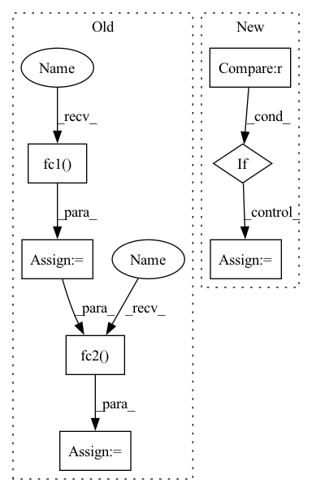

Pattern ID :132
Before Change
assert x.shape[1] == self.channels
// BxCxL
theta = torch.mean(x, axis=-1)
theta = self .fc1( theta)
theta = self.relu(theta)
theta = self.fc2( theta)
theta = 2 * self.sigmoid(theta) - 1
relu_coefs = theta.view(-1, self.channels, 2*self.k) * self.lambdas + self.init_v
// BxCxL -> LxBxCx1After Change
relu_coefs = theta.view(-1, self.channels, 2*self.k) * self.lambdas + self.init_v
if self.conv_type == "1d" :
// BxCxL -> LxBxCx1
x_perm = x.permute(2, 0, 1).unsqueeze(-1)
output = x_perm * relu_coefs[:, :, :self.k] + relu_coefs[:, :, self.k:]
// LxBxCx2 -> BxCxL
result = torch.max(output, dim=-1)[0].permute(1, 2, 0)
elif self.conv_type == "2d":
// BxCxHxW -> HxWxBxCx1
x_perm = x.permute(2, 3, 0, 1).unsqueeze(-1)
output = x_perm * relu_coefs[:, :, :self.k] + relu_coefs[:, :, self.k:]
// HxWxBxCx2 -> BxCxHxW
result = torch.max(output, dim=-1)[0].permute(2, 3, 0, 1)
return result
In pattern: SUPERPATTERN
Frequency: 3
Non-data size: 7
Instances Fragment ID: 1330069
Project Name: islanna/dynamicrelu
Commit Name: 1ee4394be4c9e5517d7dc2e5605416b65b321e53
Time: 2020-04-14
Author: slizhikova.a.v@gmail.com
File Name: dyrelu.py
M Class Name: DyReLUB
N Class Name: DyReLUB
M Method Name: forward(2)
N Method Name: forward(2)
M Parent Class: DyReLU
N Parent Class: nn.Module
M File Name: dyrelu.py
N File Name: dyrelu.py
M Start Line: 55
M End Line: 66
N Start Line: 62
N End Line: 80
Before Change
def forward(self, batch_size,z=None):
z = Variable(torch.rand(batch_size, self.z_dim), requires_grad = False).to(self.device) if z is None else z
x = F.softplus(self.bn1(self.fc1( z) ) + self.bn1_b)
x = F.softplus(self.bn2(self.fc2( x) ) + self.bn2_b)
x = F.softplus(self.fc3(x))
return x
class ImprovedGAN(nn.Module):After Change
z = Variable(torch.rand(batch_size, self.z_dim), requires_grad = False).to(self.device) if z is None else z
for _ in range(self.num_hidden):
z = self.activations[_](self.bn_layers[_](self.layers[_](z)) + self.bn_b[_])
if len(self.activations)==self.num_hidden+1 :
z = self.activations[self.num_hidden](self.fc(z))
return z
class ImprovedGAN(nn.Module): Fragment ID: 1330036
Project Name: ygzwqzd/lamda-ssl
Commit Name: ea5ee280fc4c0242970da002d41f42c1aaed9c96
Time: 2022-03-18
Author: 1129198222@qq.com
File Name: Semi_sklearn/Network/ImprovedGan.py
M Class Name: Generator
N Class Name: Generator
M Method Name: forward(3)
N Method Name: forward(3)
M Parent Class: nn.Module
N Parent Class: nn.Module
M File Name: Semi_sklearn/Network/ImprovedGan.py
N File Name: Semi_sklearn/Network/ImprovedGan.py
M Start Line: 74
M End Line: 78
N Start Line: 95
N End Line: 100
Before Change
assert x.shape[1] == self.channels
// BxCxL
theta = torch.mean(x, axis=-1)
theta = self.fc1( theta)
theta = self.relu(theta)
theta = self.fc2( theta)
theta = 2 * self.sigmoid(theta) - 1
relu_coefs = theta.view(-1, self.channels, 2*self.k) * self.lambdas + self.init_v
// BxCxL -> LxBxCx1After Change
relu_coefs = theta.view(-1, self.channels, 2*self.k) * self.lambdas + self.init_v
if self.conv_type == "1d" :
// BxCxL -> LxBxCx1
x_perm = x.permute(2, 0, 1).unsqueeze(-1)
output = x_perm * relu_coefs[:, :, :self.k] + relu_coefs[:, :, self.k:]
// LxBxCx2 -> BxCxL
result = torch.max(output, dim=-1)[0].permute(1, 2, 0)
elif self.conv_type == "2d":
// BxCxHxW -> HxWxBxCx1
x_perm = x.permute(2, 3, 0, 1).unsqueeze(-1)
output = x_perm * relu_coefs[:, :, :self.k] + relu_coefs[:, :, self.k:]
// HxWxBxCx2 -> BxCxHxW
result = torch.max(output, dim=-1)[0].permute(2, 3, 0, 1)
return result
Fragment ID: 1330070
Project Name: islanna/dynamicrelu
Commit Name: 1ee4394be4c9e5517d7dc2e5605416b65b321e53
Time: 2020-04-14
Author: slizhikova.a.v@gmail.com
File Name: dyrelu.py
M Class Name: DyReLUB
N Class Name: DyReLUB
M Method Name: forward(2)
N Method Name: forward(2)
M Parent Class: DyReLU
N Parent Class: nn.Module
M File Name: dyrelu.py
N File Name: dyrelu.py
M Start Line: 55
M End Line: 66
N Start Line: 62
N End Line: 80
Before Change
shortcut = self.shortcut(x) if self.stride == 1 else out
// Squeeze-Excitation
w = F.avg_pool2d(out, out.size(2))
w = F.relu(self.fc1( w) )
w = self.fc2( w) .sigmoid()
out = out * w + shortcut
return out
After Change
out = out * w
// Output
out = self.bn3(self.conv3(out))
if self.drop_rate > 0 :
out = F.dropout2d(out, self.drop_rate)
shortcut = self.shortcut(x) if self.stride == 1 else out
out = out + shortcut
return out Fragment ID: 1330040
Project Name: johnsk95/pt4al
Commit Name: 12420c5f4366b50d9b2fde2f0f68ad886f4bcd09
Time: 2020-04-01
Author: liukuang.lk@alibaba-inc.com
File Name: models/efficientnet.py
M Class Name: Block
N Class Name: Block
M Method Name: forward(2)
N Method Name: forward(2)
M Parent Class: nn.Module
N Parent Class: nn.Module
M File Name: models/efficientnet.py
N File Name: models/efficientnet.py
M Start Line: 41
M End Line: 49
N Start Line: 55
N End Line: 66